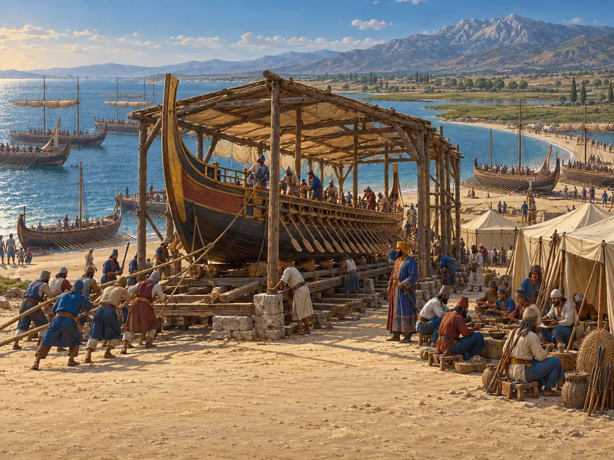
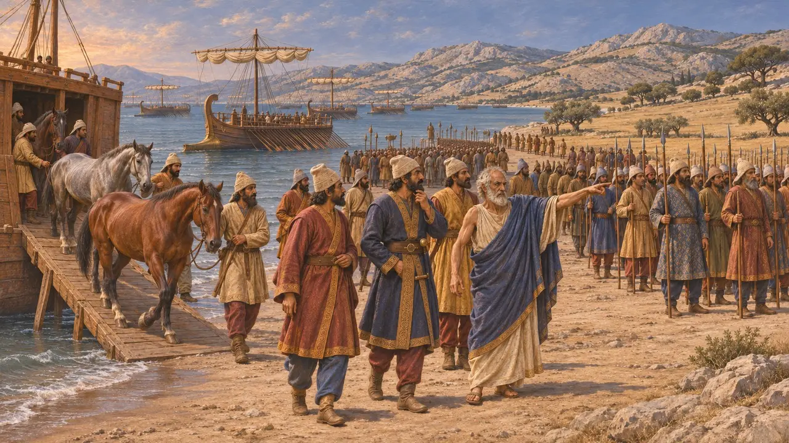
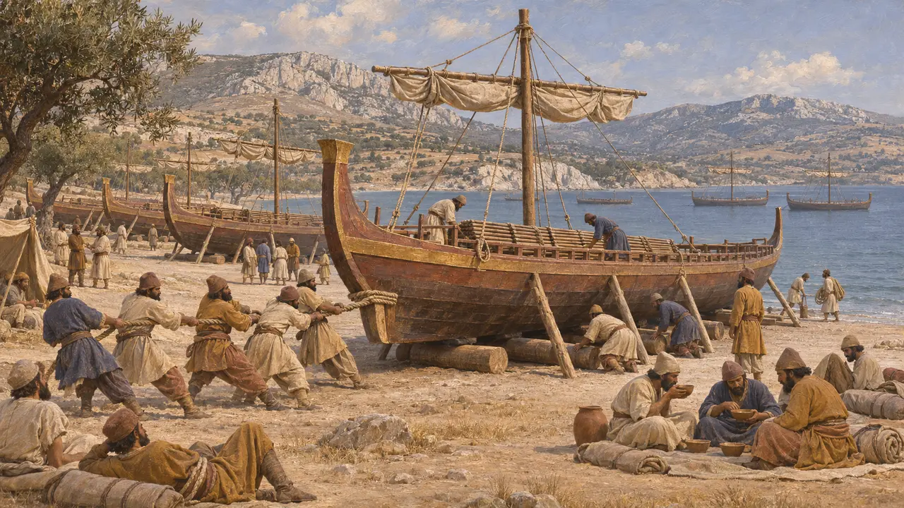
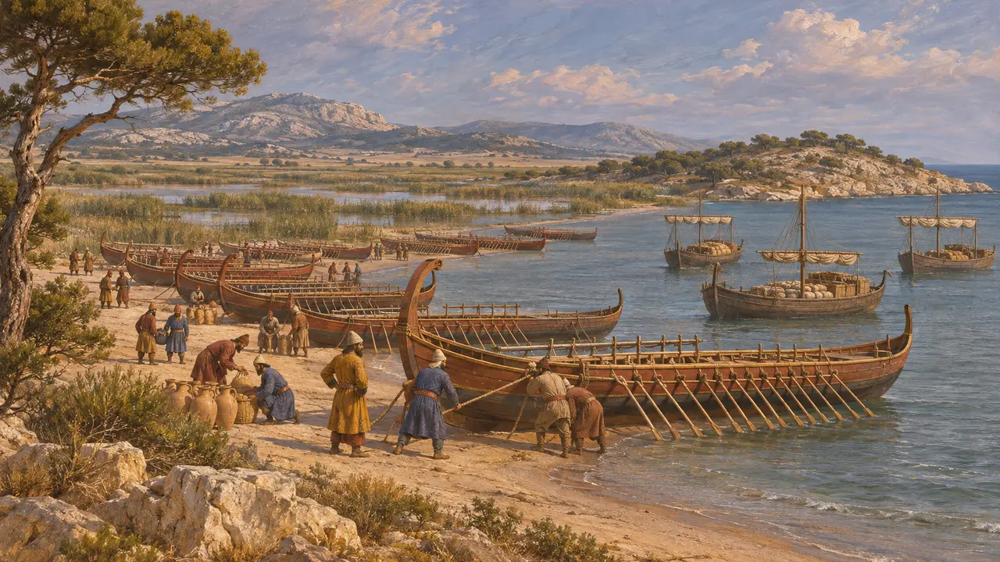
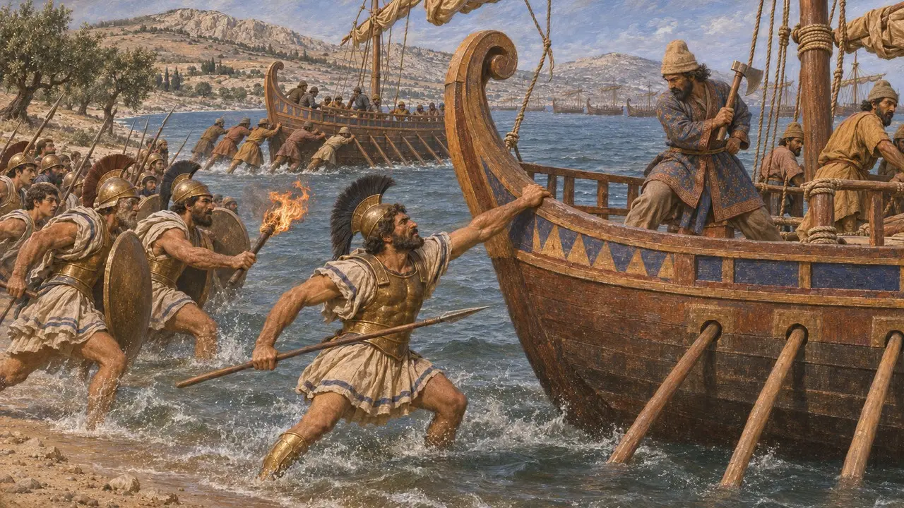
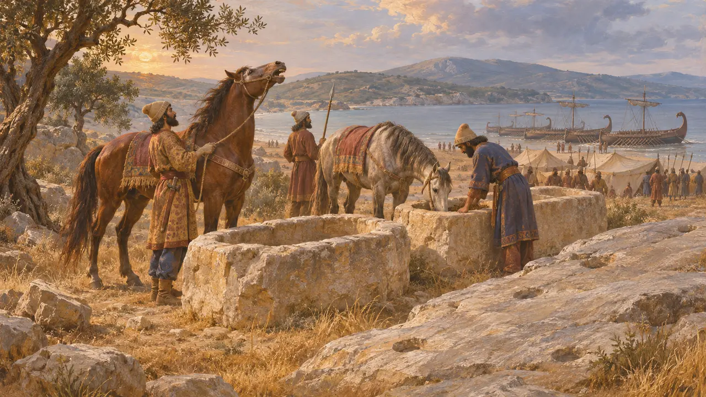

Корабельный лагерь
Персидский флот, вытащенный на берег в Марафонской бухте, Аттика, 490 г. до н. э.
В игре: Уровень 8: Марафонская бухта
В 490 году флот Датиса и Артаферна переправился от Эретрии и пристал у Марафона, на северо-восточном побережье Аттики. Корабли, конские транспорты и береговой лагерь при них были базой войска и единственным путём домой. Когда персидский строй был сломлен, бой закончился у самой кромки воды: афиняне пытались захватить и сжечь корабли.
В игре: В игре лагерь строится как памятник с фундаментом из известняка, волоками и деревянным частоколом. Геродот не сообщает о подобных сооружениях при Марафоне; частокол напоминает береговой вал, который он описывает при Микале в 479 г. до н. э.

Высадка при Марафоне
Античное свидетельствоГеродот пишет, что изгнанный афинский тиран Гиппий привёл персов к Марафону, потому что эта местность была в Аттике самой удобной для конницы и лежала близ Эретрии. По его словам, Гиппий поставил там корабли на якорь и выстраивал войска по мере высадки. Численность флота он определяет в 600 триер с судами для перевозки коней; большинство историков считают эту цифру завышенной.
Herodotus 6.95, 6.102, 6.107

Как древний флот разбивал лагерь
Античное свидетельствоВёсельные боевые корабли той эпохи были достаточно лёгкими, чтобы их вытаскивали на берег: там корпуса просыхали, а команды могли есть и спать на суше. При Микале в 479 году, по словам Геродота, персы вытащили корабли на сушу и возвели вокруг них вал из камней и брёвен, вырубив ради этого плодовые деревья. О подобном укреплении при Марафоне он не пишет, и часть кораблей там, возможно, просто стояла на якоре.
Herodotus 9.96-97

Где стояли корабли
СпорныйНи один древний автор не указывает точного места. Многие историки помещают флот в защищённой северо-восточной части бухты близ Схиниаса, за мысом Киносура, так что между ним и равниной лежало Большое болото. Другие отстаивают более центральный участок берега. Заметка в «Суде», византийском словаре X века, утверждает, что персидской конницы не было на месте, когда афиняне пошли в атаку, — возможно, потому что её снова грузили на корабли, но это до сих пор вызывает споры.
Suda, s.v. choris hippeis; P. Krentz, The Battle of Marathon, 2010

Бой у кораблей
Античное свидетельствоГеродот пишет, что афиняне преследовали разбитых персов до самого моря, требовали огня и хватались за корабли. Там пал полемарх Каллимах, а Кинегиру, сыну Евфориона, отрубили топором руку, когда он ухватился за корму корабля; позднейшие авторы называют его братом поэта Эсхила. Афиняне захватили семь кораблей; остальные отчалили, забрали эретрийских пленников, оставленных на острове Эгилия, и обогнули Суний.
Herodotus 6.113-116

Призраки и ясли
Позднейшая легендаПавсаний, писавший более шести веков спустя, сообщает, что каждую ночь на Марафонском поле слышались ржание коней и шум битвы. Он также упоминает каменные ясли, будто бы принадлежавшие коням Артаферна, и следы на скале, якобы указывающие место его шатра. Это местные предания, которые рассказывали путникам, а не свидетельства о лагере.
Pausanias 1.32.4, 1.32.7
Источники
- Herodotus 6.94-117
- Herodotus 9.96-97
- P. Krentz, The Battle of Marathon, 2010
- J. F. Lazenby, The Defence of Greece 490-479 BC, 1993
- Pausanias 1.32
- P. Briant, From Cyrus to Alexander, 2002